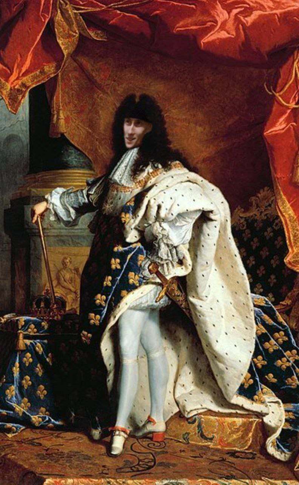

11 марта родился этот замечательный молодой человек, или же, если не прибедняться: плейбой, филантроп и миллиардер(в будущем).
Наверняка вы слышали об этой восходящей звезде. Этот юноша довольно популярен в тик токе, его аудитория на сегодняшний день составляет почти 25 тысяч подписчиков, а если быть точнее :
@_ssxc1vd_
Далее будет представлен ТОП из 10 фактов о немалоизвестном Георгии Гольденберге
ну во-первых: он с легкостью составит вам конкуренцию в танцах, особенно если речь идет о тектонике
во-вторых: он ангел, но где же его крылья?
в-третьих: он всегда поддержит, вы легко можете звонить ему в любое время дня и ночи, но есть одно но...
И тем не менее он поднимет трубку, даже если вы звоните ему в рабочее время и даже если это домофон
в-четвертых: Гоша – приятный мальчик, культурный. И это сказал не абы-кто, а бабушка Жариковой Анастасии. Ну, или как сказал ее же дедушка :
«А этот малый шарит в хорошей музыке»
в-пятых: Жора мальчик впечатлительный, его легко удивить, достаточно одной маленькой детали (ну или не совсем маленькой...)
в-шестых: споры о национальной принадлежности Георгия не утихают ни на миг.
Кто он? Белорус, еврей, африканец или может быть шотландец? Этот вопрос будоражит умы многих...
в-седьмых: аркан Георгия "Император", и если вам это ни о чем не говорит, то он сам вам все пояснит
в-восьмых: Джордж – парень, который делится хорошим настроением и заряжает своими эмоциями.
Кстати, вот эмоция, которую он использует чаще всего
в-девятых: Гошан вообще очень щедрый и ответственный, поэтому он всегда вовремя возвращает деньги, которые взял в долг.
Но иногда он бывает слишком увлечен. Например, игрой на гитаре
ну и в-десятых: он просто царь, ну кто бы сомневался

Подводя итог, мы можем сделать следующий вывод:
Георгий – забавный парень, с которым никогда не будет скучно.
Он определённо является душой компании, человеком, подбивающим толпу на различного рода авантюры.
Кажется, у него действительно хороший дар убеждения, ведь именно он позвонит тебе ночью и вытащит в дебри, если ему это будет необходимо.
Харизма – это его сильная сторона, которая при определённых обстоятельствах становится нехитрым оружием в умелых руках.
Его смело можно назвать рыцарем, потому что именно он является тем, кто не побоится заступиться за даму в беде тёмной ночью.
Он тот, кто сможет прийти на помощь тогда, когда это действительно будет необходимо.
Он тот, кто сможет поднять тебе настроение даже тогда, когда это кажется невозможным.
Он тот, с кем можно и поговорить по душам, и поплакать, и посмеяться.
Он тот, кого ты точно запомнишь, пообщавщись с ним хотя бы однажды.
И пусть иногда его можно назвать настоящей занозой в одном месте, это не делает его плохим.
Он – Георгий Гольденберг, и пусть он остаётся таким.